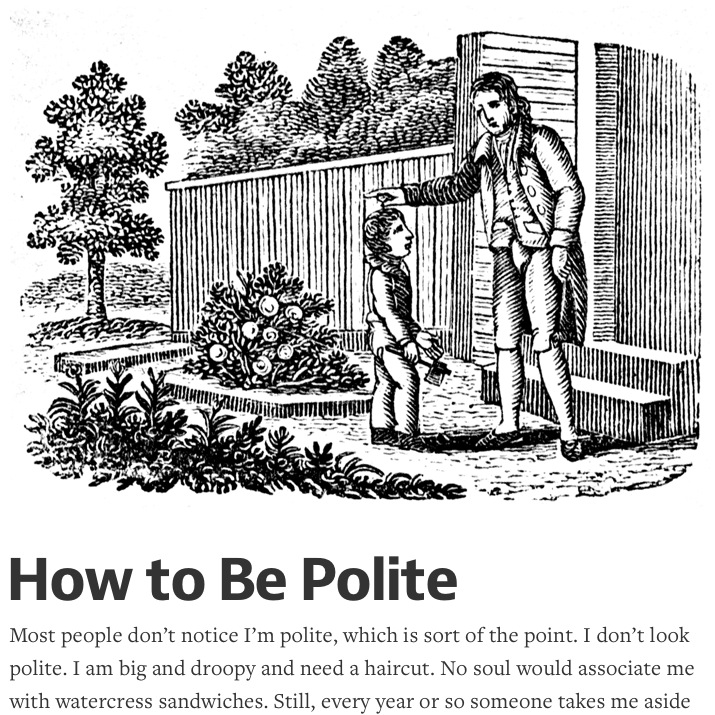

How To Be Polite
Perma🔗 (via @lonelysandwich)

I'd prefer to title this "How to be Considerate", but even with its title as-is, it's worth reading.
People silently struggle from all kinds of terrible things. They suffer from depression, ambition, substance abuse, and pretension. They suffer from family tragedy, Ivy-League educations, and self-loathing. They suffer from failing marriages, physical pain, and publishing. The good thing about politeness is that you can treat these people exactly the same.
. . .
This is not a world where you can simply express love for other people, where you can praise them. Perhaps it should be. But it’s not. I’ve found that people will fear your enthusiasm and warmth, and wait to hear the price. Which is fair. We’ve all been drawn into someone’s love only to find out that we couldn’t afford it. A little distance buys everyone time.
He goes on to list empathy as an effect of this "politeness". I'm not sure if it's a result of it, or a cause for it. We can all be a bit nicer. A bit more patient. A bit more understanding. A little slower to pass judgement. A bit more thoughtful. A bit more considerate.
- Prior: Master of Play - The New Yorker
- Next: Abandonauts - Adam Atomic